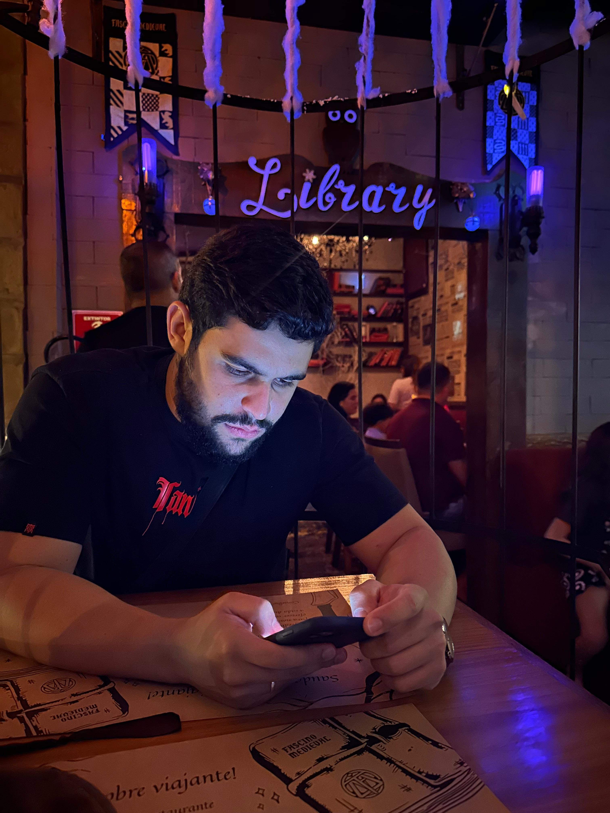

Hello, it's me Jamerson Lima. I'm a Develop Full Stack
I'm Jamerson Lima, a versatile Full Stack developer passionate about creating web experiences. Welcome to my portfolio, where I share my journey in the world of technology and innovation. As a Full Stack developer, I've honed my skills in both front-end and back-end technologies, allowing me to create dynamic, interactive, and user-friendly web applications.
